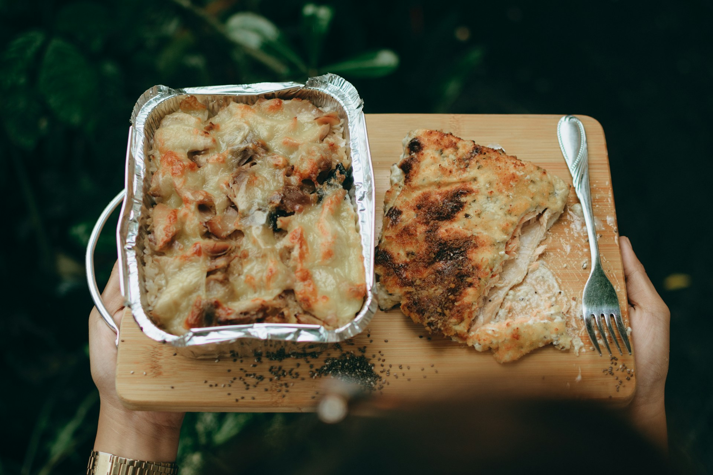

Lasagna Recipe
Home

Description
Lasagna is a classic Italian dish made with layers of pasta, meat, cheese,
and sauce. It's a hearty and comforting meal that's perfect for family
gatherings or special occasions.
Ingredients:
-
Noodles: Lasagna noodles (oven-ready or regular, boiled
until al dente.
-
Meat Sauce: Ground meat (beef, pork or a combination),
onion garlic, canned crushed tomatoes, tomato paste, italian seasoning,
salt, pepper, and red pepper flakes.
-
Cheese Mixture: Ricotta cheese, egg, Parmesan cheese,
parsley, salt, and pepper
-
Other Cheeses: Mozzarella (for layering and topping).
-
Optional additions:Provolone or other cheeses, fresh
herbs like basil or parsley, spinach.
Steps:
-
prepare the meat sauce: Brown the ground meat with
onion and garlic, then add canned tomatoes , tomato paste, and
seasonings. Simmer to develop flavors.
-
Make the cheese mixture: Combine ricotta cheese with
egg, Parmesan, parsley, and seasonings.
-
Cook the noodles: Boil lasagna noodles according to the
package directions (or use oven-ready noodles).
-
Assemble the lasagna: Spread a thin layer of meat sauce
in the bottom of a baking dish. Layer noodles, cheese mixture, meat
sauce, and mozzarella, repeating layers until the dish is full.
-
Bake: Cover the lasagna and bake for a specified time,
then remove the cover and ake until golden brown and bubbly.
-
Rest and serve: Let the lasagna rest for a few minutes
before slicing and serving